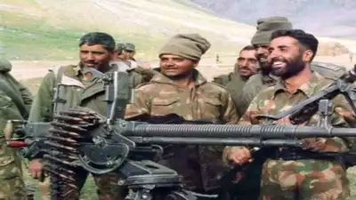
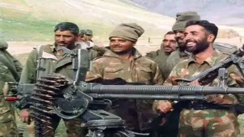

☛ Kargil War
Batra's battalion, the 13 Jammu and Kashmir Rifles (13 JAK Rif), reached Dras on 6 June,
was placed under the command of 56 Mountain Brigade, and was given orders to act as reserves
to the 2nd battalion of the Rajputana Rifles (2 Raj Rif) during their attack on Tololing mountain.
The 18th battalion of The Grenadiers (18 Grenadiers) first attacked Tololing on 22 May, but were unable
to capture the peak. 18 Grenadiers made four attempts to capture Tololing, but could only succeed in
securing the lower slopes, while suffering heavy casualties. Eventually, 2 Raj Rif was assigned the mission
of capturing Tololing and they did so on 13 June 1999.
After the capture of Tololing, 13 JAK Rif marched from Dras to Tololing, reaching their destination
in 12 hours. Upon reaching, Alpha company of 13 JAK Rif took over Tololing and a portion of the Hump
Complex from 18 Grenadiers.
 
